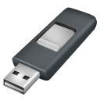
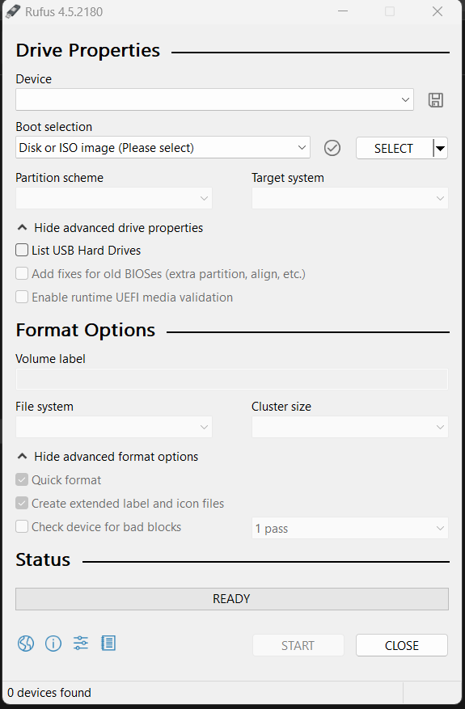
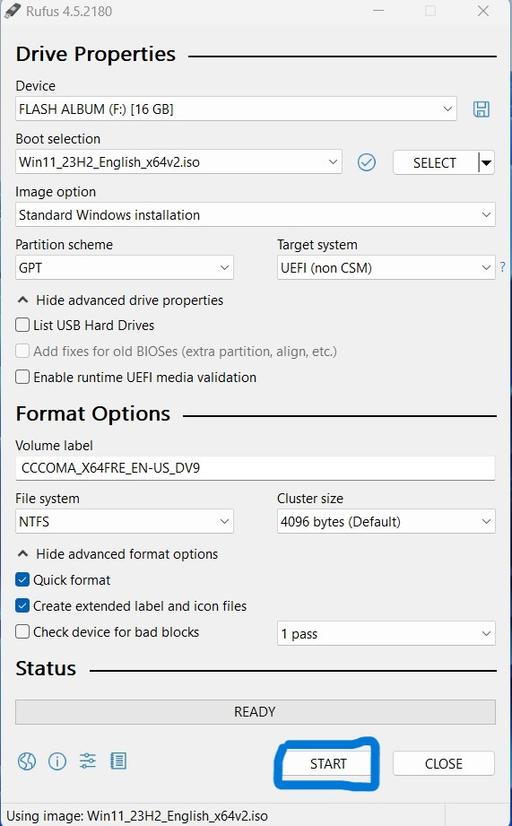
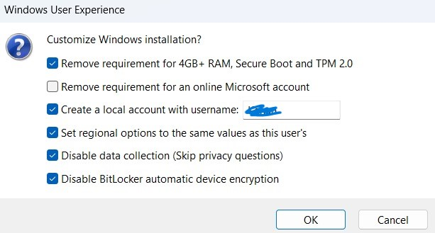

Step 01

Install Rufus Sowtware and iso (you need os to boot)
Use this link to download rufus
Rufus Software
Step 02
Open Rufus

plug your USB Drive to your PC.
Select your drive in first box
Select your iso on Boot selection
Type label name on volume label
Click on Start.

Step 03
Type the Account name on box.
Give tick on you need options and click "OK"
